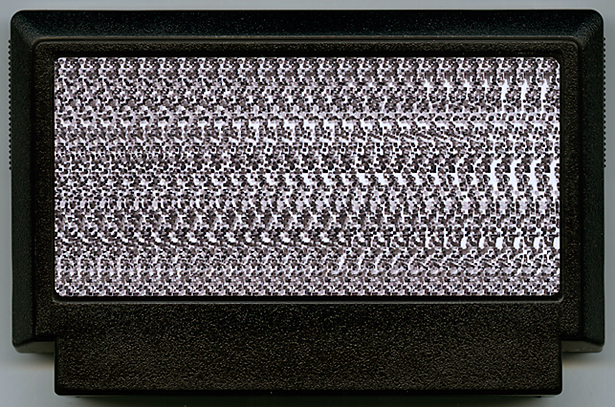

砂嵐 / snow noise
フルカワ タイゴ／会社員
お茶の間の地上デジタル対応テレビで「砂嵐」を楽しもう！
2011年7月24日アナログ放送終了とともにアナログテレビが姿を消しはじめ、
近い将来「砂嵐」は見ることができなくなります。
そんな「砂嵐」をいつまでも楽しめるソフトがついに発売。
エディットモードでは、だれでも簡単にランダム・ドット・ステレオグラム(裸眼立体視)を 作成可能。自宅のテレビで気軽に裸眼3Dが楽しめるようになります！